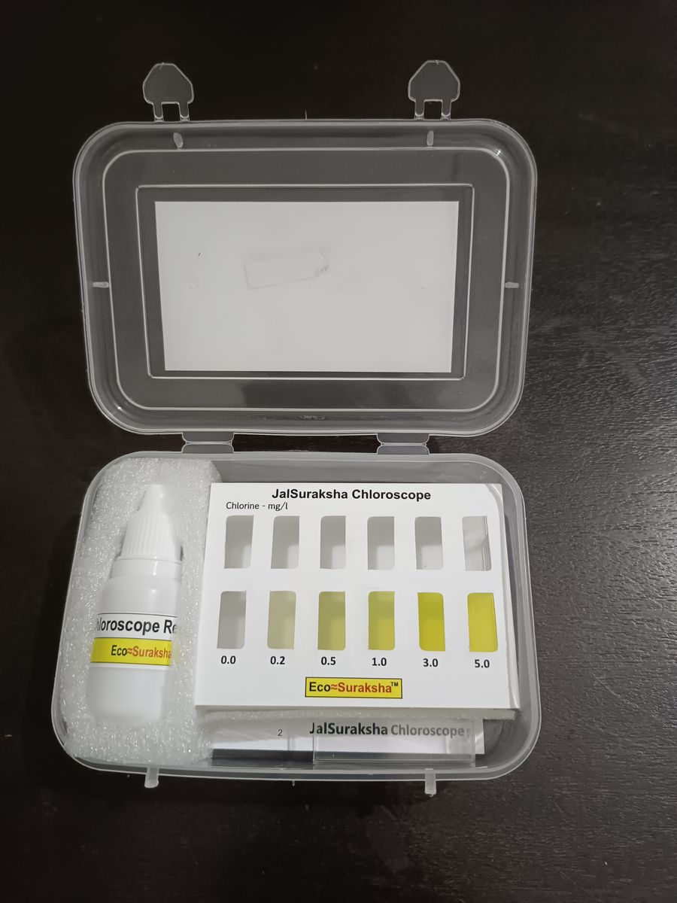
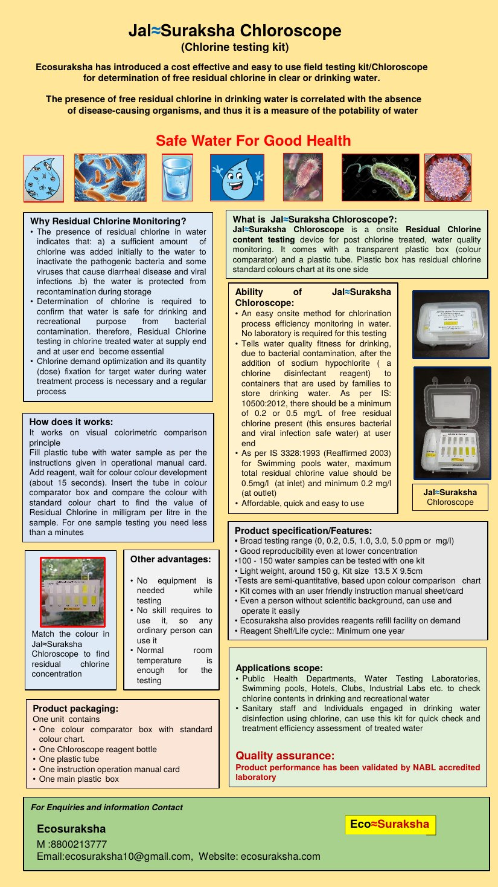
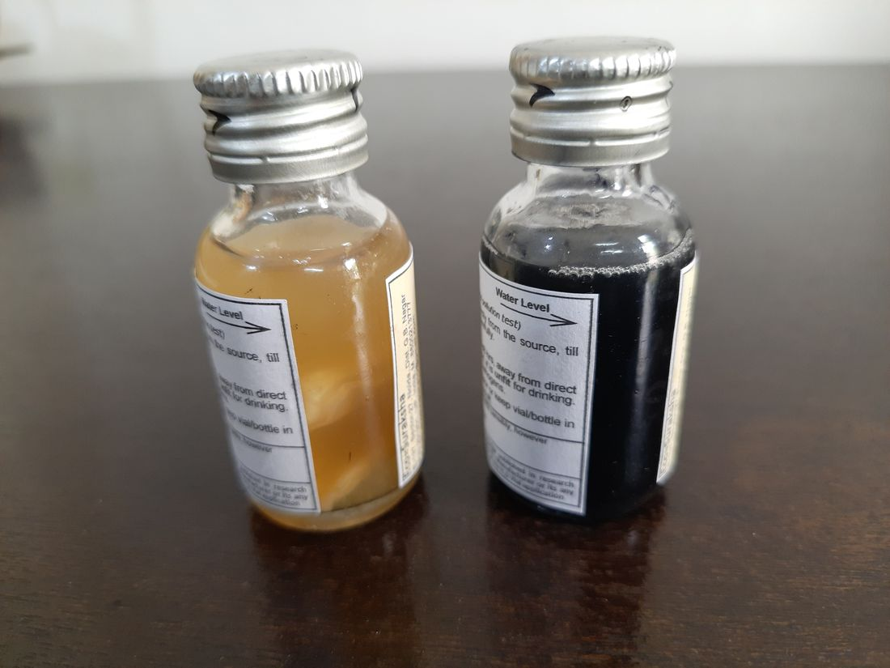
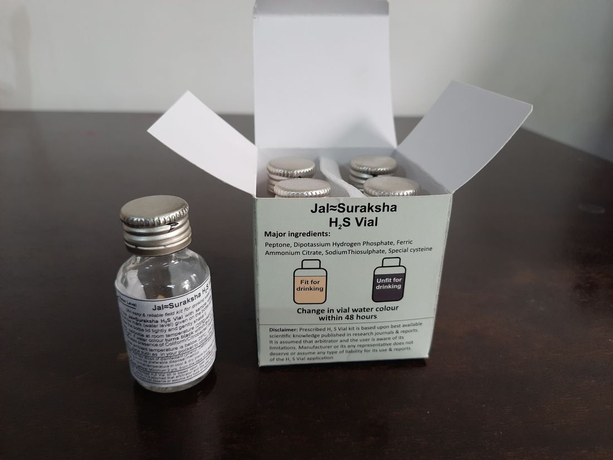
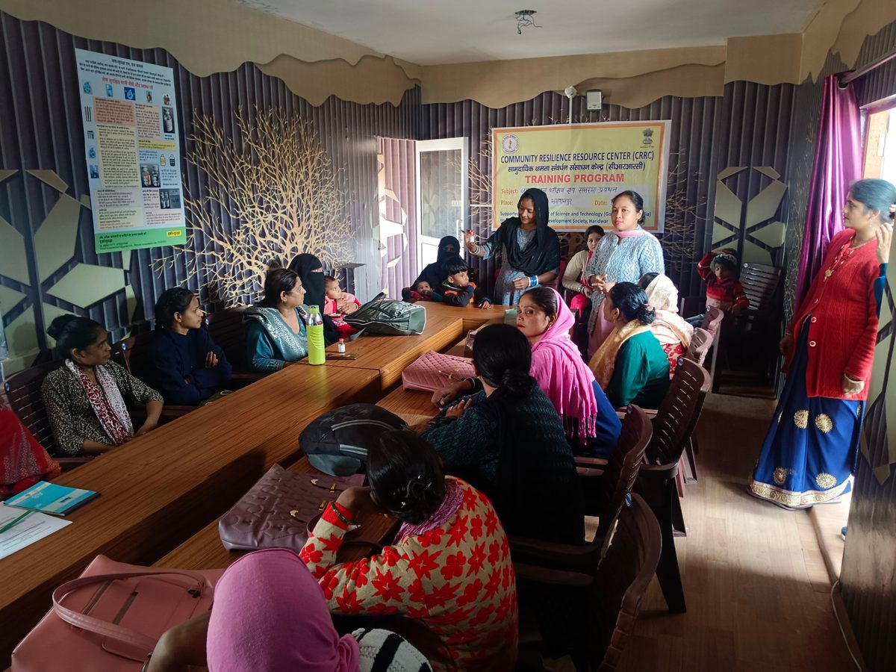
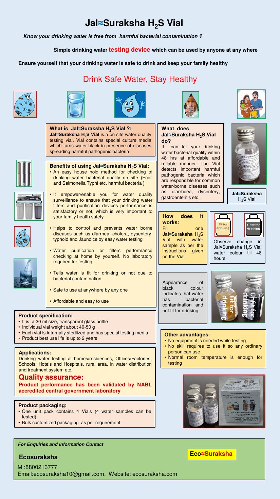
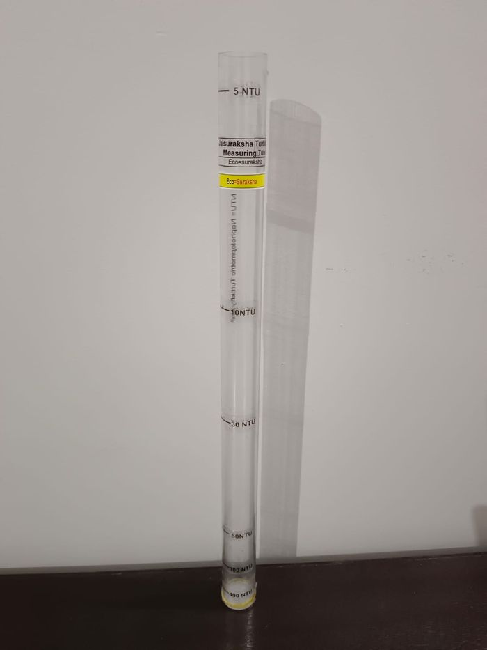
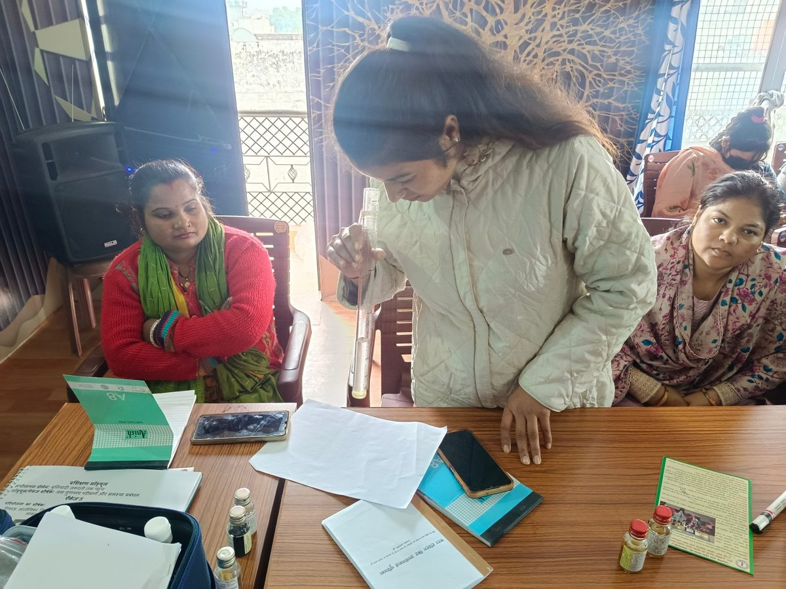
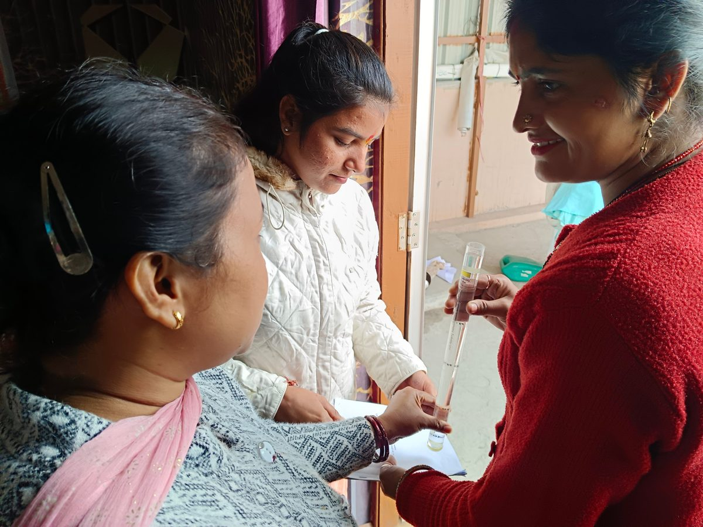
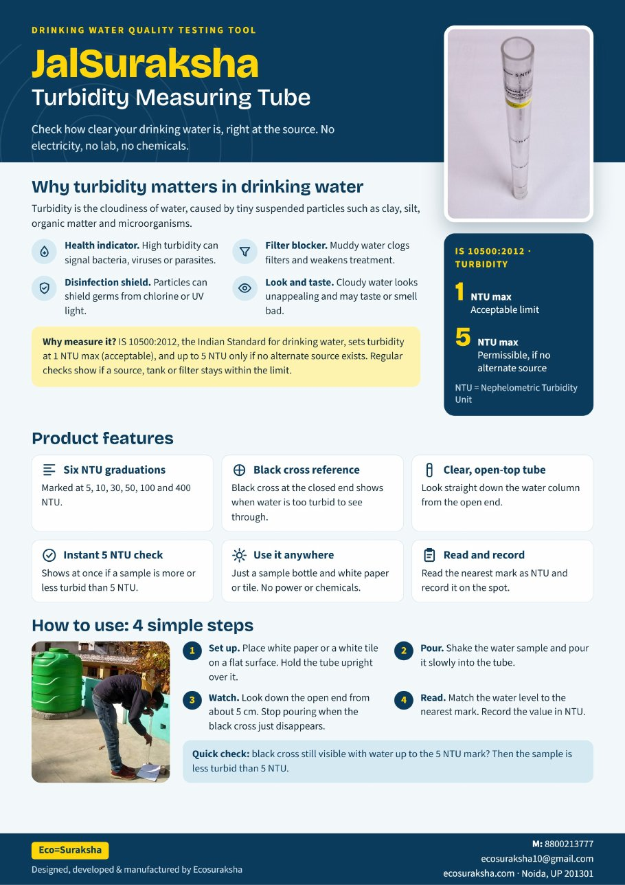

Water Test Kits
Three practical tools to check chlorine, harmful bacteria and clarity in drinking water — designed so that anyone can use them, anywhere.
Which kit do I need?
| JalSuraksha Chloroscope | JalSuraksha H2S Vial | JalSuraksha Turbidity Tube | |
|---|---|---|---|
| Question it answers | Is there enough disinfectant (chlorine) left in the water? | Is the water free from harmful bacteria? | How clear or cloudy is the water? |
| What it measures | Free residual chlorine, in mg/L | Presence of harmful bacteria | Turbidity, in NTU |
| How you read it | Match the colour against the printed chart | Water turns black = harmful bacteria present | Pour water in until the black cross at the bottom just disappears, then read the NTU mark |
| Result time | Under a minute | Within 48 hours | Immediate, on the spot |
| Typical users | Water treatment staff, swimming pools, health departments, labs | Households, schools, hospitals, villages | Anyone who needs to check water clarity |
JalSuraksha Chloroscope
An easy on-site test for free residual chlorine in drinking water and swimming-pool water. It tells you whether the chlorine added to disinfect the water is still present in enough quantity to keep it safe.
Why test for chlorine?
- Chlorine left in the water shows that enough was added to inactivate the bacteria and some viruses that cause diarrhoea and other infections.
- It also shows the water stays protected from re-contamination while it is stored.
- The Indian drinking water standard (IS 10500:2012) calls for a minimum free residual chlorine of 0.2–0.5 mg/L at the user end.
- Helps water treatment staff work out the right chlorine dose for the water they treat.
How it works
- Fill the plastic tube with your water sample, as shown on the instruction card.
- Add the reagent and wait about 15 seconds for the colour to develop.
- Place the tube in the colour comparator box and match its colour to the standard chart.
- Read the chlorine value in mg/L from the matching colour.
Specifications
| Test range | 0, 0.2, 0.5, 1.0, 3.0, 5.0 mg/L (ppm) |
|---|---|
| Type of result | Semi-quantitative (colour comparison) |
| Time per test | Less than one minute |
| Tests per kit | 100–150 water samples |
| Weight and size | About 150 g; kit size 13.5 × 9.5 cm |
| Reagent shelf life | Minimum one year |
| Refills | Reagent refills available on request |
| Conditions | Works at normal room temperature |
What is in the box
- One colour comparator box with the standard colour chart
- One JalSuraksha Chloroscope reagent bottle
- One plastic tube
- One instruction card
- One main plastic carry box
Who uses it
Public health departments, water testing laboratories, swimming pools, hotels, clubs and industrial labs, as well as sanitation staff and individuals who disinfect drinking water with chlorine.
Quality assurance
Product performance has been validated by an NABL-accredited laboratory.
Photos and video

JalSuraksha Chloroscope brochure

Download the JalSuraksha Chloroscope product brochure: a one-page summary of what the kit measures, how to use it, specifications and packaging. Handy to print, share or forward.
How to buy the JalSuraksha Chloroscope
To buy the JalSuraksha Chloroscope, or to ask for more information, please contact EcoSuraksha by voice call, WhatsApp or email.
8800213777 works for both voice calls and WhatsApp. You can also use our enquiry form for bulk or institutional orders.
JalSuraksha H2S Vial
The JalSuraksha H2S Vial is a sealed glass vial containing a special culture medium. If disease-causing bacteria are present in your water, the water inside the JalSuraksha H2S Vial turns black within 48 hours. No equipment, no laboratory, no skills needed.
What it tells you
- Whether your drinking water is fit to drink or affected by bacterial contamination.
- It detects harmful bacteria linked with common water-borne illnesses such as diarrhoea, dysentery, gastroenteritis, typhoid and jaundice (for example E. coli and Salmonella Typhi).
- Lets you check at home whether your water filter or purifier is really doing its job.
How it works
- Fill the JalSuraksha H2S Vial with your water sample, following the instructions printed on the JalSuraksha H2S Vial label.
- Keep it at normal room temperature and watch the water colour for up to 48 hours.
- Water turns black: harmful bacteria are present — the water is not fit for drinking.
- Water stays light-coloured: no bacterial contamination detected — the water is fit for drinking.
JalSuraksha H2S Vial application video
Specifications
| JalSuraksha H2S Vial | 30 ml transparent glass bottle, about 40–50 g |
|---|---|
| Inside | Each JalSuraksha H2S Vial is sterilised and holds a special testing medium (peptone, dipotassium hydrogen phosphate, ferric ammonium citrate, sodium thiosulphate, special cysteine, as printed on the pack) |
| Time to result | Up to 48 hours |
| Best-use life | Up to 2 years |
| Pack size | One pack = 4 JalSuraksha H2S Vials (4 samples) |
| Bulk orders | Customised bulk packaging on request |
| Conditions | Works at normal room temperature |
Who uses it
Homes and residences, multi-storey societies, offices, factories, schools, hotels, hospitals, rural areas, and water distribution and treatment complexes.
Quality assurance
Product performance has been validated by an NABL-accredited central government laboratory.
Photos and video



JalSuraksha H2S Vial brochure

Download the JalSuraksha H2S Vial product brochure: a one-page summary of what the vial detects, how it works, specifications and packaging. Handy to print, share or forward.
How to buy the JalSuraksha H2S Vial
To buy the JalSuraksha H2S Vial, or to ask for more information, please contact EcoSuraksha by voice call, WhatsApp or email.
8800213777 works for both voice calls and WhatsApp. You can also use our enquiry form for bulk or institutional orders.
JalSuraksha Turbidity Tube
Check how clear your drinking water is, right at the source, with no electricity, no laboratory and no chemicals. The JalSuraksha Turbidity Tube measures clarity in the standard NTU (nephelometric turbidity units).
Why measure clarity?
- Health indicator: high turbidity can signal bacteria, viruses or parasites.
- Disinfection shield: particles can shield germs from chlorine or UV light.
- Filter blocker: muddy water clogs filters and weakens treatment.
- Look and taste: cloudy water looks unappealing and may taste or smell bad.
The Indian drinking water standard (IS 10500:2012) sets turbidity at 1 NTU maximum as the acceptable limit, and up to 5 NTU only if no alternate source exists. Regular checks show whether a source, tank or filter stays within the limit.
How it works
- Set up. Place white paper or a white tile on a flat surface and hold the JalSuraksha Turbidity Tube upright over it.
- Pour. Shake the water sample and pour it slowly into the JalSuraksha Turbidity Tube.
- Watch. Look down the open end from about 5 cm. Stop pouring when the black cross at the bottom just disappears.
- Read. Match the water level to the nearest mark and record the value in NTU.
Quick check: if the black cross is still visible with water up to the 5 NTU mark, the sample is less turbid than 5 NTU.
Features
| Scale | Six NTU graduations, marked at 5, 10, 30, 50, 100 and 400 NTU |
|---|---|
| Reference | Black cross at the closed end shows when water is too turbid to see through |
| Format | Clear, open-top tube; look straight down the water column |
| Instant check | Shows at once whether a sample is more or less turbid than 5 NTU |
| What you need | A sample bottle and white paper or tile. No power or chemicals |
Photos and video



JalSuraksha Turbidity Tube brochure

Download the JalSuraksha Turbidity Tube product brochure: a one-page summary of why turbidity matters, the tube’s features and the four simple steps to use it. Handy to print, share or forward.
How to buy the JalSuraksha Turbidity Tube
To buy the JalSuraksha Turbidity Tube, or to ask for more information, please contact EcoSuraksha by voice call, WhatsApp or email.
8800213777 works for both voice calls and WhatsApp. You can also use our enquiry form for bulk or institutional orders.
Common questions
Do I need a laboratory or any training to use these kits?
No. The kits need no equipment and no scientific background. Each comes with simple instructions, and tests work at normal room temperature.
How reliable are the results?
The performance of our kits has been validated by an NABL-accredited laboratory. The JalSuraksha Chloroscope gives a semi-quantitative result by colour comparison, and the JalSuraksha H2S Vial indicates whether harmful bacteria are present. They are on-the-spot screening tools; for legal or regulatory reporting, please confirm with an accredited laboratory.
Can I check whether my home water purifier is working?
Yes. Testing your purified water with the JalSuraksha H2S Vial from time to time tells you whether the filter is still protecting your family from bacterial contamination.
How long do the kits last?
The JalSuraksha Chloroscope reagent has a shelf life of at least one year, and one kit is enough for 100–150 tests. The JalSuraksha H2S Vial has a best-use life of up to two years.
Can I order in bulk, or get reagent refills?
Yes. JalSuraksha Chloroscope reagent refills are available on request, and JalSuraksha H2S Vials can be supplied in customised bulk packaging. Send us an enquiry or call or WhatsApp 8800213777, or email ecosuraksha10@gmail.com.
How do I buy?
Please contact EcoSuraksha by voice call or WhatsApp on 8800213777, or email ecosuraksha10@gmail.com. We will guide you on price, availability and delivery for single kits as well as institutional, school, NGO or government orders.
Are instructions available in Hindi?
Yes. Hindi brochures for the JalSuraksha Chloroscope and JalSuraksha H2S Vial are linked in each product section above. The JalSuraksha Turbidity Tube brochure is currently available in English.